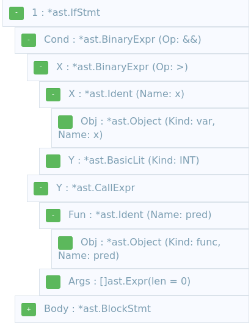

Go is well-known for having great tooling for analyzing code written in the language, right in the standard library with the go/* packages (go/parser, go/ast, go/types etc.); in addition, the golang.org/x/tools module contains several supplemental packages that are even more powerful. I've used one of these packages to describe how to write multi-package analysis tools in a post from last year.
Here I want to write about a slightly different task: rewriting Go source code using AST-based tooling. I will begin by providing a quick introduction to how existing capabilities of the stdlib go/ast package can be used to find points of interest in an AST. Then, I'll show how some simple rewrites can be done with the go/ast package without requiring additional tooling. Finally, I'll discuss the limitations of this approach and the golang.org/x/tools/astutil package which provides much more powerful AST editing capabilities.
This post assumes some basic level of familiarity with ASTs (Abstract Syntax Trees) in general, and ASTs for Go in particular.
Finding points of interest in a Go AST
Throughout this post, we're going to be using the following simple Go snippet as our lab rat:
package p
func pred() bool {
return true
}
func pp(x int) int {
if x > 2 && pred() {
return 5
}
var b = pred()
if b {
return 6
}
return 0
}
Let's start by finding all calls to the pred function in this code. The go/ast package provides two approaches for finding points of interest in the code. First, we'll discuss ast.Walk. The full code sample for this part is on GitHub. We begin by parsing the source code (which we'll be piping into standard input):
fset := token.NewFileSet()
file, err := parser.ParseFile(fset, "src.go", os.Stdin, 0)
if err != nil {
log.Fatal(err)
}
Now we create a new value implementing the ast.Visitor interface and call ast.Walk:
visitor := &Visitor{fset: fset}
ast.Walk(visitor, file)
Finally, the interesting part of the code is the Visitor type:
type Visitor struct {
fset *token.FileSet
}
func (v *Visitor) Visit(n ast.Node) ast.Visitor {
if n == nil {
return nil
}
switch x := n.(type) {
case *ast.CallExpr:
id, ok := x.Fun.(*ast.Ident)
if ok {
if id.Name == "pred" {
fmt.Printf("Visit found call to pred() at %s\n", v.fset.Position(n.Pos()))
}
}
}
return v
}
Our visitor is only interested in AST nodes of type CallExpr. Once it sees such a node, it checks the name of the called function, and reports matches. Note the type assertion on x.Fun; we only want to report calls when the function is referred to by an ast.Ident. In Go, we could call functions in other ways, like invoking anonymous functions directly - e.g. func(){}().
We have a FileSet stored in the visitor; this is only used here to report positions in the parsed code properly. To save space, the AST stores all position information in a single int (aliased as the token.Pos type), and the FileSet is required to translate these numbers into actual positions of the expected <filename>:line:column form.
Visualizing the Go AST
At this point it's worth mentioning some useful tools that help writing analyzers for Go ASTs. First and foremost, the go/ast package has a Print function that will emit an AST in a textual format. Here's how the full if statement in our code snippet would look if printed this way:
. . 1: *ast.IfStmt {
. . . If: 9:2
. . . Cond: *ast.BinaryExpr {
. . . . X: *ast.BinaryExpr {
. . . . . X: *ast.Ident {
. . . . . . NamePos: 9:5
. . . . . . Name: "x"
. . . . . . Obj: *(obj @ 72)
. . . . . }
. . . . . OpPos: 9:7
. . . . . Op: >
. . . . . Y: *ast.BasicLit {
. . . . . . ValuePos: 9:9
. . . . . . Kind: INT
. . . . . . Value: "2"
. . . . . }
. . . . }
. . . . OpPos: 9:11
. . . . Op: &&
. . . . Y: *ast.CallExpr {
. . . . . Fun: *ast.Ident {
. . . . . . NamePos: 9:14
. . . . . . Name: "pred"
. . . . . . Obj: *(obj @ 11)
. . . . . }
. . . . . Lparen: 9:18
. . . . . Ellipsis: -
. . . . . Rparen: 9:19
. . . . }
. . . }
. . . Body: *ast.BlockStmt {
. . . . Lbrace: 9:21
. . . . List: []ast.Stmt (len = 1) {
. . . . . 0: *ast.ReturnStmt {
. . . . . . Return: 10:3
. . . . . . Results: []ast.Expr (len = 1) {
. . . . . . . 0: *ast.BasicLit {
. . . . . . . . ValuePos: 10:10
. . . . . . . . Kind: INT
. . . . . . . . Value: "5"
. . . . . . . }
. . . . . . }
. . . . . }
. . . . }
. . . . Rbrace: 11:2
. . . }
A somewhat more interactive way to explore this AST dump is using the web page at http://goast.yuroyoro.net/, where you can paste your source and get an AST dump with expandable and collapsible sections. This helps focus only on parts we're interested in; here's an extract from our AST:
(Update: https://astexplorer.net/ is an even nicer AST explorer)
Using the ast.Inspect API
Using ast.Walk for finding interesting nodes is pretty straightforward, but it requires scaffolding that feels a bit heavy for simple needs - defining a custom type that implements the ast.Visitor interface, and so on. Luckily, the go/ast package provides a lighter-weight API - Inspect; it only needs to be provided a closure. Here's our program to find calls to pred() rewritten with ast.Inspect:
func main() {
fset := token.NewFileSet()
file, err := parser.ParseFile(fset, "src.go", os.Stdin, 0)
if err != nil {
log.Fatal(err)
}
ast.Inspect(file, func(n ast.Node) bool {
switch x := n.(type) {
case *ast.CallExpr:
id, ok := x.Fun.(*ast.Ident)
if ok {
if id.Name == "pred" {
fmt.Printf("Inspect found call to pred() at %s\n", fset.Position(n.Pos()))
}
}
}
return true
})
}
The actual AST node matching logic is the same, but the surrounding code is somewhat simpler. Unless there's a strong need to use ast.Walk specifically, ast.Inspect is the approach I recommend, and it's the one we'll be using in the next section to actually rewrite the AST.
Simple AST rewrites
To begin, it's important to highlight that the AST returned by the parser is a mutable object. It's a collection of node values interconnected via pointers to each other. We can change this set of nodes in any way we wish - or even create a wholly new set of nodes - and then use the go/format package to emit Go formatted source code back from the AST. The following program will simply emit back the Go program it's provided (though it will drop the comments with the default configuration):
func main() {
fset := token.NewFileSet()
file, err := parser.ParseFile(fset, "src.go", os.Stdin, 0)
if err != nil {
log.Fatal(err)
}
format.Node(os.Stdout, fset, file)
}
Now, back to rewriting that AST. Let's make a couple of changes:
- We'll rename the function pred to pred2, and rename all the call sites to call the new function name.
- We'll inject a printout into the beginning of each function body - emulating some sort of instrumentation we could add this way.
Given the original code snippet, the output will look like this (with the changed/new lines highlighted):
package p
func pred2() bool {
fmt.Println("instrumentation")
return true
}
func pp(x int) int {
fmt.Println("instrumentation")
if x > 2 && pred2() {
return 5
}
var b = pred2()
if b {
return 6
}
return 0
}
[Note: we're not adding an import of fmt here - this is left as an exercise for the reader]
The full code of our rewriting program is available here. It's using ast.Inspect to find the nodes it wants to operate on. Here's the renaming of the call sites:
ast.Inspect(file, func(n ast.Node) bool {
switch x := n.(type) {
case *ast.CallExpr:
id, ok := x.Fun.(*ast.Ident)
if ok {
if id.Name == "pred" {
id.Name += "2"
}
}
// ...
If the function is called by an identifier, the code just appends "2" to the name. Again, we're not operating on some copy of the AST - this is the real, living AST we're editing here.
Now let's move on to the next case, where we're handing function declarations:
case *ast.FuncDecl:
if x.Name.Name == "pred" {
x.Name.Name += "2"
}
newCallStmt := &ast.ExprStmt{
X: &ast.CallExpr{
Fun: &ast.SelectorExpr{
X: &ast.Ident{
Name: "fmt",
},
Sel: &ast.Ident{
Name: "Println",
},
},
Args: []ast.Expr{
&ast.BasicLit{
Kind: token.STRING,
Value: `"instrumentation"`,
},
},
},
}
x.Body.List = append([]ast.Stmt{newCallStmt}, x.Body.List...)
The first three lines in this case do the same as we did for the call sites - just rename the pred function to pred2. The rest of the code is adding the printout to the start of a function body.
That task is fairly easy to accomplish since each FuncDecl has a Body which is an ast.StmtList, which itself holds a slice of ast.Stmt in its List attribute. Out program prepends a new expression to this slice, in effect adding a new statement to the very beginning of the function body. The statement is a hand-crafted AST node. You must be thinking - how did I know how to build this node?
It's really not a big deal once you get the hang of it. Parsing small snippets of code and dumping their ASTs helps, as well as the detailed documentation of the go/ast package. I also found the go2ast tool very useful; it takes a piece of code and emits exactly the Go code needed to build its AST.
Finally, at the end of the program we emit back the modified AST:
fmt.Println("Modified AST:")
format.Node(os.Stdout, fset, file)
And this gets us the modified snippet shown at the beginning of this section.
Limitations of AST editing with Walk and Inspect
So far we've managed to rewrite the AST in a couple of interesting ways using ast.Inspect for finding the nodes. Can we do any kind of rewrite this way?
It turns out the answer to this question is no, or at least not easily. As a motivating example, consider the following task: we'd like to rewrite each call to pred() so that it's logically negated, or turns into !pred(). How do we do that?
It's worth spending a few minutes thinking about this question before reading on.
The issue is that when ast.Inspect (or ast.Walk) hands us an ast.Node, we can change the node's contents and its children, but we cannot replace the node itself. To replace the node itself, we'd need access to its parent, but ast.Inspect does not give us any way to access its parent. A different, slightly more technical way to think about it is: we get handed a node pointer by value, meaning that we can tweak the node it points to, but can't set the pointer to point to a different node. To achieve the latter, ast.Inspect would have to hand us a pointer to a pointer to the node.
This limitation was discussed several years ago, and finally in 2017 a new package appeared in the "extended stdlib" golang.org/x/tools module - astutil.
More powerful rewriting with astutil
The APIs astutil provides let us not only find nodes of interest in the AST, but also a way to replace the node itself, not just its contents. In fact, the package provides several useful helpers to delete, replace and insert new nodes through the Cursor type. A full walkthrough of the capabilities of astutil is outside the scope of this post, but I will show how to use it in order to implement our task of turning each pred() into !pred(). Here we go:
func main() {
fset := token.NewFileSet()
file, err := parser.ParseFile(fset, "src.go", os.Stdin, 0)
if err != nil {
log.Fatal(err)
}
astutil.Apply(file, nil, func(c *astutil.Cursor) bool {
n := c.Node()
switch x := n.(type) {
case *ast.CallExpr:
id, ok := x.Fun.(*ast.Ident)
if ok {
if id.Name == "pred" {
c.Replace(&ast.UnaryExpr{
Op: token.NOT,
X: x,
})
}
}
}
return true
})
fmt.Println("Modified AST:")
format.Node(os.Stdout, fset, file)
}
Instead of calling ast.Inspect, we call astutil.Apply, which also walks the AST recursively and gives our closure access to the node. Apply lets us register a callback for the node both before and after it was visited; in this case we only provide the after case.
Our closure identifies the call to pred in a way that should be similar by now. It then uses the Cursor type to replace this node by a new one which is just the same node wrapped in a unary NOT expression. Hidden in its implementation, the Cursor type does have access to the parent of each node, making it possible to replace the actual node with something else.